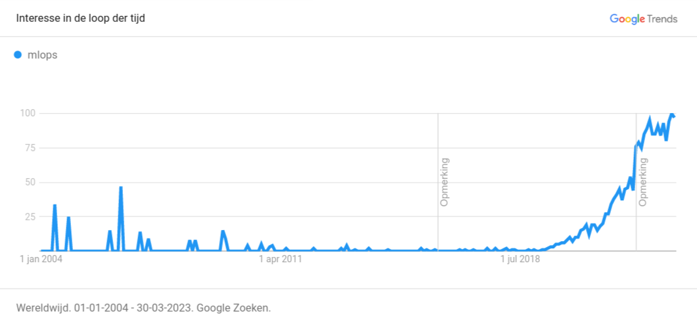
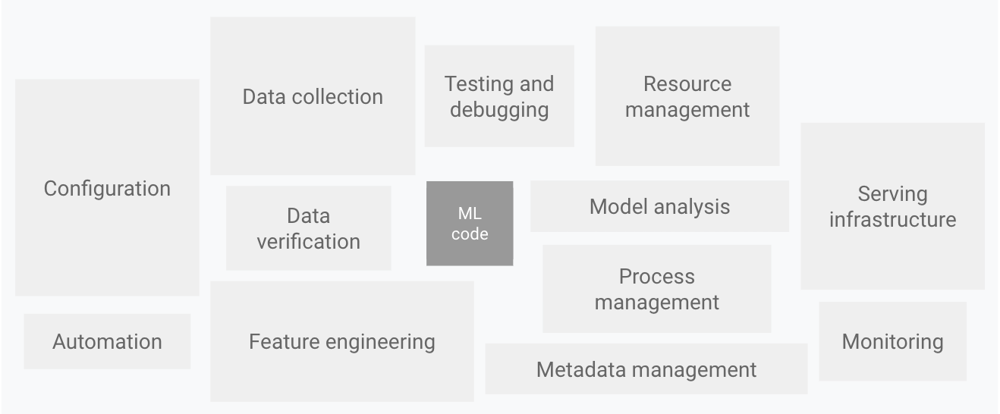
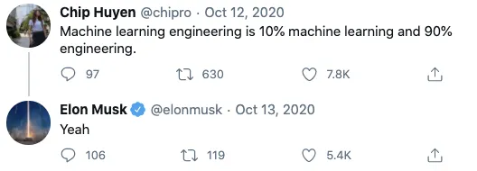
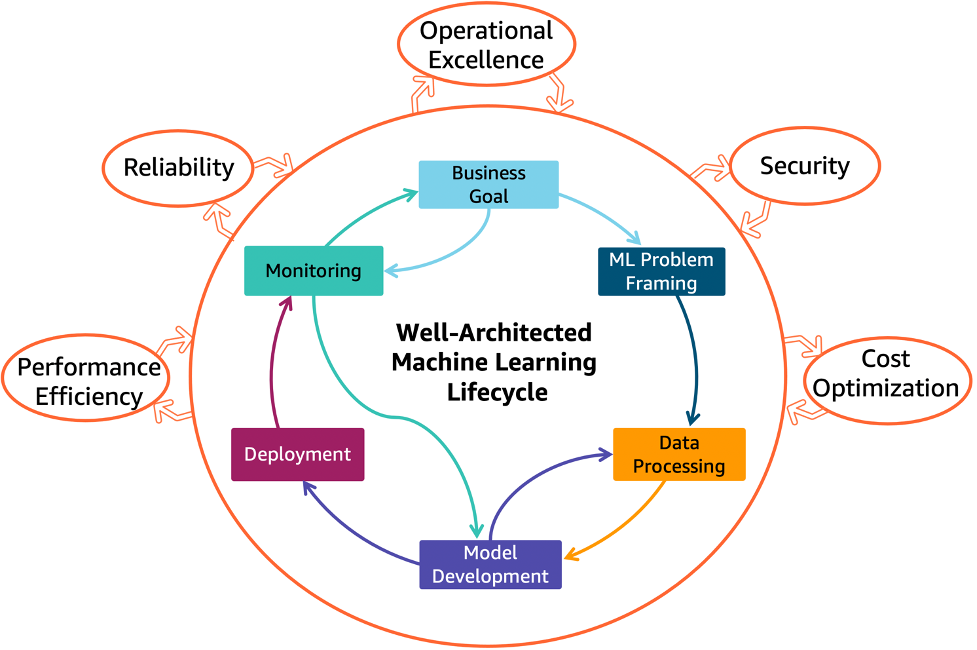
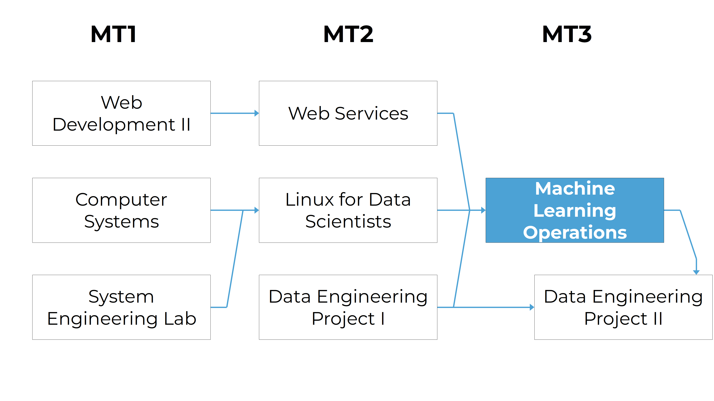

Introduction
Machine Learning Operations
HOGENT applied
computer science
Thomas Aelbrecht
2023-2024
Introduction
Why MLOps?

Why MLOps?

Why MLOps?

Why MLOps?
- New field, daily evolution
- ML model design is relatively easy
- ML model in production is much harder, time-consuming
Why MLOps?
Mitigate risks and increase the value of ML models in production.
More than deploying models
- Data versioning
- Prevent bad models from being deployed
- Monitoring performance
- Model regression, data drift, model drift…
- Availability
- …
Best practices
- Modularity of ML steps
- Containerization
- Versioning (data and models)
- Mixed, autonomous teams (~ DevOps)
- Peer reviews, peer reviews, peer reviews…
References
- Google Trends: MLOps
- Sculley, D., Holt, G., Golovin, D., Davydov, E., Phillips, T., Ebner, D., … & Dennison, D. (2015). Hidden technical debt in machine learning systems. Advances in neural information processing systems, 28.
- Degroote, S. (2021). MLOps 101 - What, why and how to get started today
ML lifecycle
ML lifecycle

Business goal
- Solve a real problem
- Goal: create real (business) value
ML problem framing
How could ML help? Is ML needed at all?
- No? Don’t use ML!
- Yes? What kind of ML problem is it?
- Structured data problem?
- NLP problem?
- Computer vision problem?
- Multi-modal problem?
- …
Data processing
We need data, but
- How do we get the data?
- How do we store the data?
- Where do we store the data?
- How long do we store the data for?
- …
Once we have the data, we need to think about what we’ll do with it (exploration, annotation…)
Model development
- What model do we use?
- What are the requirements?
- Where do we get the model from?
- Are we allowed to use the model? (licensing)
- How do we train the model?
- How do we keep track of the parameters used?
- How do we store the model?
The model is only a small part of the ML system!
Deployment
We have a model, now what? Let’s deploy it!
- Who needs access?
- What do we need?
- Batch?
- Real-time?
- Serverless?
- What usage do we expect?
- …
Monitoring
The model is deployed, but we’re not done yet!
- Is the infra still running?
- How do we know if the model is performing well?
- Model drift
- Data drift
- …
- How do we know if the model is used correctly?
- Does the model solve the business problem?
Conclusion
- It is complex
- Requires some organization & automation
- Multiple people involved
- Multiple datasets
- Multiple models
- All used at the same time
- = MLOps
Machine Learning Operations
Machine Learning Operations
Standardization and streamlining of machine learning life cycle management: development, testing, deployment, and monitoring.
- Aka MLOps
- Don’t confuse with ModelOps or AIOps
Study Guide
Study Guide
See Chamilo course for detailed information.
Course within the curriculum

Learning goals and competences
- CI/CD principles in the context of ML
- Bring a ML model into production and monitor it using CI/CD principles
- Describes the challenges and possible solutions for running a ML model on devices with limited computing power
- Run a ML model on a device with limited computing power, e.g. using Tensorflow Lite
Course contents
- CI/CD pipelines
- Docker, Kubernetes, Kubeflow
- Azure Machine Learning
- Metadata and artifacts
- Monitoring and logging
Learning materials
- Start with the overview in the Chamilo course
- GitHub: lecture slides, lab assignments
- Online manuals of software used
- Video recordings of classroom instruction (Dutch)
- (Books - see study guide on Chamilo)
Software needed
PS> choco install git
PS> choco install vscode
PS> choco install virtualbox
PS> choco install vagrant(macOS, Linux: see course overview on Chamilo)
Software (continuation)
- VSCode: install recommended plugins (see course overview)
- VirtualBox: Extension Pack!
- Git client: also install Git Bash!
- Ansible: only Linux and macOS
Azure for Students
Who still has an Azure for Students subscription?

Teaching methods
- Classroom instruction, demonstration
- Lab assignments
- Guest lecture
Tutoring
- Individual guidance for lab assignments
- Ask questions during class sessions
- Outside class: general Teams channel
- Only for personal questions: e-mail/Teams chat
Semester schedule
- intro, software install, M1. Docker
- M2. CI/CD pipelines
- (continued)
- M3. The ML Workflow (guest lecture)
- (continued)
- (continued)
Semester schedule
- M4. Kubernetes
- (continued)
- M5. Kubeflow
- (continued)
- M6. Monitoring and logging
- (continued)
- Optional: catch-up session
Assessment
- Portfolio:
- Github repo with source code and reports
- Demonstrations:
- During the semester (at least 3x)
- End result (exam period or W13)
Resit
Personal assignment, no support
- finish lab assignments
- extra assignment
Questions?
- Ask questions during class hours
- Use Teams channel